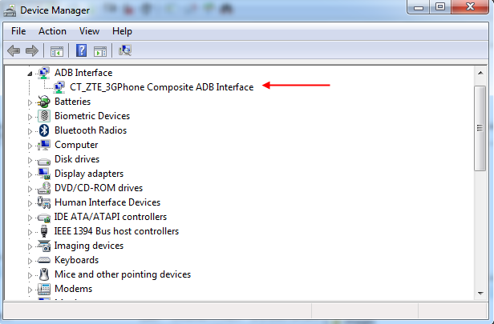

WO Mic 到底值不值得掏钱？——把手机当电脑麦克风这笔账算明白
WO Mic 把手机变电脑麦克风，四连法覆盖全场景，但 iOS 只能 Wi-Fi、USB 要折腾 ADB。作为一个认真用过几种连法的人，我来算一算：免费版够不够用、哪些情况真需要掏钱、不掏钱有什么替代。
开篇：它到底值不值得掏钱？
WO Mic 是一款把手机变电脑虚拟麦克风的工具，它的官网上有完整的功能介绍和版本说明——手机装个 App，电脑跑个客户端，连上之后所有会议软件、录屏软件、语音通话都能直接选「WO Mic Device」作为输入设备。这套东西我断断续续用了大半年，从最开始的 Wi-Fi 连法，到后来的 USB 有线，中间踩过 iOS 限制的坑、调过 Zoom 找不到麦的 bug、翻过无数次设置面板。
先说结论：它根本就不收费。没有订阅、没有 Pro 版、没有高级功能锁。但「免费」不等于「零成本」——你要花时间折腾驱动、忍受 iOS 的功能阉割、扛得住网络波动带来的断连。这些时间成本加起来，对某些人来说不如直接买个几十块钱的桌面麦省心。这篇我把账算透，你对号入座就行。
定价拆解：免费版给了什么
WO Mic 的定价结构极其简单——全部功能免费，源码也开放。你不需要付一分钱就能用上它支持的所有四种连接方式：Wi-Fi、Wi-Fi Direct、USB 有线、蓝牙。PC 客户端免费下，手机 App 免费装，没有试用期、没有功能限制弹窗、没有水印。
但"全部功能"这句话要打个折扣，因为有几个硬限制是产品本身和平台决定的，不是付费就能解锁的：
| 功能 | Android | iOS | 备注 |
|---|---|---|---|
| Wi-Fi 连法 | ✔ | ✔ | 同路由器即可 |
| Wi-Fi Direct | ✔ | ✘ | iOS 不开放 |
| USB 有线 | ✔ | ✘ | iOS 不开放 |
| 蓝牙 | ✔ | ✘ | iOS 不开放 |
| 驱动安装 | 需 ADB | 免驱动 | 安卓要折腾 |
这张表是整个付费决策的核心——WO Mic 对 iOS 用户来说本质上是个"只有 Wi-Fi 连法"的简化版，而 Wi-Fi 连法的稳定性又受制于路由器质量和网络环境。
算账：分三类人
轻度用户：偶尔开个会、做个直播
典型场景：一周用一两次，每次半小时以内，就是家里电脑开会不想出声，用手机凑一下。
免费版够不够：完全够。Wi-Fi 连法在家庭网络下 90% 的情况稳定工作。连上之后 Zoom、腾讯会议、飞书里下拉框选一下就能用，不用懂 ADB、不用折腾驱动。偶尔断一次重连就行，不耽误事。
每单位时间成本：几乎为零。5 分钟从官方下载拿到 App 和客户端，连一次大概 30 秒，之后每次开机自动发现设备。
这笔账：不用花钱，花时间也极少。闭眼用免费版，甚至可以考虑干脆不用 WO Mic——电脑自带的麦克风在这个使用强度下已经够用了。
主力用户：每天用 1~3 小时，内容创作者 / 学生上网课 / 远程办公
典型场景：每天固定时间段用，对稳定性有要求，不能接受会议开到一半突然断麦。
免费版够不够：勉强够，但需要折腾。问题出在 Wi-Fi 连法的延迟和丢包上——如果路由器在客厅、电脑在卧室、手机揣兜里，信号穿墙偶尔出问题，表现就是声音断断续续或者延迟 200ms 以上（对方听着像机器人）。解决办法：换 USB 有线连法，womic文档里有完整的驱动安装和故障排查指南。但光有指南没用，你还得给电脑装 ADB 驱动（手机厂商各自有驱动包，找不到的话装 Universal ADB Driver 通用方案）、手机开发者选项开 USB 调试、插上数据线后还要等设备管理器识别。整个流程第一次 15~20 分钟，之后每次用之前插根线就行。

每单位时间成本：USB 连法的稳定性相当于你花 20 分钟换来了"零丢包、最低延迟、插线充电一体"的体验。这 20 分钟的投入摊销到每天 2 小时的使用量，相当于每天省了 5 分钟因断连重连、调音量、找路由器信号浪费的时间。一个月下来回本。
这笔账：主力用户必上 USB 连法，但只限于安卓手机。如果你是 iPhone 主力用户，Wi-Fi 是唯一选择，那稳定性基本取决于你的路由器——换一根更好的 Wi-Fi 6 路由器可能比 WO Mic 本身花的钱还多。
重度用户：专业录音 / 直播带货 / 播客主播
典型场景：每天 4 小时以上，对音质和零中断有硬性要求。
免费版够不够：不够。WO Mic 的采样率最高就那样，无线传输天然有压缩，即便 USB 连法的音质也只是"够用"而非"专业"。而且它本质上是个"虚拟声卡驱动 + 音频流传输"工具，不是专业录音设备——没有增益调节、没有降噪、没有多麦克风混音。
每单位时间成本：重度用户需要的不是 WO Mic 能不能免费，而是"花多少钱能换来零故障的录音环境"。这个问题的答案通常是——买个正经的 USB 桌面麦克风。几十块钱的入门款（比如某讯、某山）的收音质量、稳定性、抗干扰能力，都超过 WO Mic 搭配任何手机。WO Mic 在重度用户场景下的价值是应急，而非主力。
这笔账：重度用户直接略过 WO Mic，省下折腾时间买麦。但留着 WO Mic 当备用方案——桌面麦突然挂了，掏出手机 USB 连上就能顶上，这 2 分钟切换时间可能救你一次直播事故。
替代方案：不掏钱有什么别的路
如果你觉得 WO Mic 的折腾成本太高，或者手机不是安卓的，有几条路可以考虑：
同类免费工具：市面上还有几个类似的 App，比如 DroidCam（同时支持麦克风和摄像头）、IP Webcam、Pocket Cast 系列。功能差不多，连法也类似，iOS 限制同样存在。换一个不会少折腾，只是界面可能更对你胃口。
蓝牙直连：如果你手机和电脑都支持蓝牙音频，iOS 用户其实可以直接走系统级蓝牙麦克风——在 Windows 蓝牙设置里把手机作为音频输入设备配对。缺点是延迟比 Wi-Fi 还高、音质也一般，但胜在零配置、不用装任何客户端。
原生方案：iPhone 用户可以把电脑和 iPhone 用同一 Apple ID，Mac 端有 Universal Clipboard，音频走 Handoff 虽然不稳定但体验更原生。不过这套方案只适用于 Mac 用户，Windows 无解。
干脆买麦：刚才重度用户那条已经说过了。50 块钱左右的 USB 桌面麦，插上即用、无需驱动、音质秒杀任何手机传输方案。这笔钱如果你的使用频率超过每周 3 次，半年就回本。
结论：哪类人闭眼付、哪类人再等等、哪类人永远不用付
等等，WO Mic 不收费，哪来的"付"？其实这里的"付"指的是时间成本和硬件投入——你把时间花在折腾驱动上，还是把钱花在买麦上，本质都是"付费"。
- 闭眼用：轻度用户 + 安卓手机 + 家庭 Wi-Fi 环境。5 分钟装完直接用，什么都不花。
- 值得折腾：主力用户 + 安卓手机 + 愿意花 20 分钟配 USB 驱动。一次折腾长期受益，稳定性和音质都是免费工具里最好的。
- 再等等：主力用户 + iPhone。iOS 的系统限制堵死了 USB 和蓝牙连法，Wi-Fi 的稳定性又不受你控制。要么凑合用 Wi-Fi，要么真买个麦。
- 永远不用碰：重度用户（专业录音）、没有安卓手机的纯 iOS 用户、不想折腾驱动的懒人。这三类场景下 WO Mic 提供的价值为负——花的时间比直接买麦还多。
我自己属于第二类主力用户，用的三星安卓机，USB 连法配好了之后半年没出过问题。驱动装一次、插上即用、还能顺便给手机充电——这笔账我觉得挺值的。但如果哪天手机换成 iPhone，我大概率会放弃 WO Mic 转用蓝牙直连或者干脆买麦。
说到底 WO Mic 的价值不在于"免费"，而在于"在你已有一台安卓手机的前提下，把它变成了一个能用的备用麦克风"。你本来就有手机，它只是帮你省了一个买麦的钱。这个省的钱值不值你花的那 20 分钟，只有你自己能算清楚。
资料来自 womic 的中文文档维护，代码仓库在GitHub、Gitee、GitCode三处都能拉到，海外访问 GitHub 快、国内走 Gitee 或 GitCode 更稳。